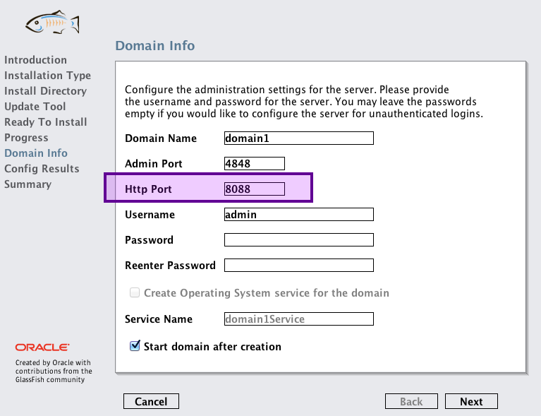

Incontournables pour beaucoup, décriées par certains, les solutions de persistance ont depuis quelques années le vent en poupe, dans les applications Java SE comme dans les applications Java EE. Nous allons dans ce chapitre nous frayer un chemin dans cette jungle de nouveautés, et découvrir comment appliquer correctement une telle solution à notre projet.
Généralités
Qu’est-ce qu’on appelle la “persistance” de données ?
Si vous ne connaissez pas ce mot, ne vous inquiétez surtout pas : au sens général, il s’agit simplement du terme utilisé pour décrire le fait de stocker des données d’une application de manière… persistante ! Autrement dit, de les sauvegarder afin qu’elles ne disparaissent pas lorsque le programme se termine. Rien de bien compliqué, en somme.
En Java, lorsqu’on parle d’une « solution de persistance des données », on évoque couramment un système permettant la sauvegarde des données contenues dans des objets. En réalité, vous connaissez donc déjà tous un moyen de persistance : le stockage dans une base de données relationnelle via JDBC !
Dans ce cas, pourquoi ne pas nous contenter de notre système actuel ?
En effet, notre tandem JDBC & DAO fonctionne bien, et persiste correctement nos données dans notre base de données MySQL. C’est pourquoi dans l’absolu, ce que vous avez appris jusque-là est suffisant pour développer une application web Java EE de petite à moyenne envergure. En outre, c’est une solution légère, portable et pratique puisqu'elle ne nécessite qu'un simple conteneur de servlets pour fonctionner !
Toutefois, il faut bien vous rendre compte d’un aspect très important. Dans notre exemple - une très petite application - nous ne nous sommes pas inquiétés de devoir réécrire un DAO pour chaque table manipulée. Pourtant, c’est une belle perte de temps : dans chacune de nos classes, nous utilisons un code source très similaire pour récupérer les données des tables et les transformer en objets. Concrètement, mis à part le SQL, l'affectation des paramètres sur l'objet PreparedStatement et la récupération des résultats et leur affectation sur le bean, rien ne change : la structure générale du code reste toujours la même !
Maintenant, imaginez-vous devoir travailler sur un projet impliquant plusieurs centaines de tables… Vous êtes bons pour écrire autant de DAO ! Parce que, même si leur structure globale est identique, chacun d’eux contient des requêtes et attributs spécifiques. Et comme vous le savez tous, non seulement le développeur est fainéant mais, par-dessus tout, la duplication de code dans un projet, c’est le mal incarné.
Pour alléger cette tâche, vous pourriez bien évidemment commencer par rajouter de l’abstraction et de la généricité dans votre couche d’accès aux données (souvent raccourcie DAL, pour Data Access Layer) et ses interfaces, afin d’obtenir une interface unique pour tous vos DAO, et ne plus devoir écrire que les implémentations spécifiques à chaque table.
Pour alléger davantage la tâche, vous pourriez ensuite réaliser un générateur de DAO, un petit programme qui se chargerait d’écrire le code de base des implémentations pour chacune des tables à votre place, et vous n’auriez alors plus qu’à reprendre chaque méthode incomplète.
Avec un tel système en place, il deviendrait alors envisageable d’attaquer le développement d’une application de grande échelle plus sereinement.
Seulement, il resterait encore des choses très pénibles à réaliser, et surtout très chronophages. Il faudrait encore s’assurer que la correspondance entre les tables et les objets est correctement réalisée, et ce pour chaque action effectuée : lecture de données, mises à jour, insertions, suppressions… À chaque fois il faudrait écrire une requête SQL spécifique, à chaque fois il faudrait récupérer son résultat et éventuellement en extraire les données pour créer ou mettre à jour les attributs d’un bean, à chaque fois…
Vous voyez où je veux en venir ? Vous devez bien sentir que si un système global gérait pour vous ces actions récurrentes, votre travail serait bien plus agréable, n’est-ce pas ? Eh bien voilà pourquoi nous sommes en droit de ne pas nous contenter d’utiliser JDBC & DAO. Et voilà pourquoi je vous présente dans ce chapitre la solution fournie par Java EE : JPA.
Qu’est-ce que JPA ?
Littéralement « Java Persistence API », il s’agit d’un standard faisant partie intégrante de la plate-forme Java EE, une spécification qui définit un ensemble de règles permettant la gestion de la correspondance entre des objets Java et une base de données, ou autrement formulé la gestion de la persistance.
Ce mécanisme qui gère la correspondance entre des objets d’une application et les tables d’une base de données se nomme ORM, pour « Object-Relational Mapping ». Ainsi dans le sens le plus simpliste du terme, ce que nous avons réalisé dans les chapitres précédents à travers nos DAO n’est rien d’autre qu’un ORM… manuel !
Et Hibernate, TopLink, EclipseLink, OpenJPA… ?
Peut-être avez-vous déjà entendu parler de ces solutions, les bien nommés « frameworks ORM ». Comprenez bien que lorsqu’on parle de JPA, il s’agit uniquement d’une API, c’est-à-dire une description d'un comportement à suivre, en l'occurrence pour respecter un standard en place.
C’est le même principe que la fameuse DataSource que nous avions découverte dans le dernier chapitre de la partie précédente : l’interface nous expliquait comment faire, mais pour mettre en place concrètement un pool de connexions, il nous a fallu utiliser une implémentation (BoneCP). Eh bien là c’est exactement pareil : les interfaces de JPA décrivent comment respecter le standard, mais nous devons utiliser une implémentation pour en tirer parti ! Voilà donc ce que sont Hibernate, EclipseLink & consorts : des implémentations du standard JPA. En d’autres termes JPA constitue la théorie, et ces frameworks en sont la pratique.
À ce propos, comme toujours, il y a des différences entre la théorie et la pratique. En effet, la plupart de ces solutions sortent du cadre défini par JPA, et proposent des fonctionnalités annexes qui leur sont propres. Ainsi, le développeur doit être conscient de ce qu’il souhaite réaliser : s’il utilise des fonctionnalités spécifiques à un framework en particulier, c’est-à-dire une des fonctionnalités qui ne sont pas décrites dans le standard JPA, alors il s’expose au risque de ne plus pouvoir faire machine arrière (choisir une autre solution de persistance) sans devoir modifier le code de son application.
Voilà donc l’avantage de disposer d’un standard bien défini : à partir du moment où l’on fait du JPA, peu importe l’implémentation utilisée, le code applicatif sera identique, et donc portable.
Principe
Maintenant que nous savons de quoi il retourne, découvrons comment tout cela s’organise.
Attention ! Je vous préviens dès maintenant, dans ce chapitre ainsi que dans les chapitres à venir, je ne vais pas détailler mes explications aussi finement que dans les parties précédentes. La principale raison étant que pour travailler sur de tels concepts avancés, il est nécessaire que vous soyez curieux et un minimum autonomes. Des pans entiers de Java EE vont entrer en jeu, et vous allez devoir lire les documentations et liens que je vous fournis au fur et à mesure de votre découverte si vous souhaitez assimiler correctement toutes les informations que je vous transmets. En outre, une autre excellente raison qui me pousse à faire ce choix est que vous devez petit à petit vous libérer du format "tutoriel", et prendre de l'aise avec l'utilisation de ressources en tous genres (documentations, forums, extraits de code, etc.), car plus vous irez loin dans une technologie, moins vous trouverez de personnes pour vous renseigner, et plus il vous faudra compter sur vos capacités à chercher les réponses par vous-mêmes !
Des EJB dans un conteneur
Le concept mère qui se cache derrière JPA, c’est le fameux EJB ou « Enterprise JavaBean ». Voilà encore un terme dont vous avez déjà dû entendre parler à maintes reprises, et pas forcément en bien…
Si je vous dis ça, c’est parce que cette technologie a connu une évolution plutôt chaotique. À leur apparition en 1998, les objets EJB ont suscité l’enthousiasme des développeurs, enthousiasme qui a rapidement laissé place à de vives critiques de tous bords : « Trop compliqué ! Trop lourd ! Trop de configuration ! Trop de fichiers XML ! », etc. Il aura fallu attendre jusqu’en 2006 pour que la troisième version des EJB gagne finalement ses galons et conquière les développeurs, grâce à un fonctionnement ultra simplifié.
Bien évidemment, nous n’allons pas nous intéresser aux méandres qui ont conduit à ce que sont les EJB aujourd’hui. Tout ce dont nous avons besoin, c’est de comprendre comment ils fonctionnent dans leur version actuelle.
Principe général
Les EJB sont des objets présentant une caractéristique bien particulière : ils sont gérés par le conteneur. Attention, quand on parle ici de conteneur il n’est plus question du simple conteneur de servlets que nous avons utilisé jusqu’à présent ! Non, il s’agit bien ici de « conteneur EJB », un élément dont le travail est de gérer entièrement le cycle de vie des EJB qu’il contient.
Qu’est-ce que cela signifie concrètement ?
Eh bien tout simplement qu’une grande partie de ce travail pénible, auparavant réalisé par le développeur, est dorénavant déléguée au conteneur, laissant ainsi, au bon fainéant qu'il est, le loisir de se concentrer sur le code métier de son application. Ne vous inquiétez pas si c’est encore flou dans votre esprit, vous comprendrez lorsque nous passerons à la pratique. ;)
JPA, ou les EJB Entity
Il existe deux types d’EJB : les EJB Entity, et les EJB Session. Celui qui sert de pilier à JPA est le premier, et le plus simple à appréhender : l’EJB Entity. C’est lui qui définit quelles données doivent être sauvegardées, et c’est à travers lui qu’est effectuée la correspondance entre un objet et une table d’une base de données.
En apparence, c’est un objet qui ressemble beaucoup à un simple Javabean, dans lequel on ajoute simplement quelques annotations. Souvenez-vous, je vous avais expliqué dans le chapitre précédent que celles-ci n’étaient rien d’autre que des méta-données… Eh bien en l’occurrence, ces informations sont ici utilisées pour informer le conteneur d’EJB de la manière dont l’objet devra être géré.
Un gestionnaire d’entités
Définir quelles données doivent être sauvegardées en construisant des entités est une première étape. Mais elle ne servirait à rien s’il n’existait pas, derrière, un système définissant comment ces données doivent être sauvegardées !
Les méthodes permettant d’établir une connexion avec la base de données et de gérer la persistance se trouvent dans un objet particulier nommé EntityManager, ou gestionnaire d'entités. Il s’agit, là encore, d’un objet dont le cycle de vie est géré par le conteneur.
Toutefois, qui dit connexion à une base de données, dit configuration manuelle. Voilà pourquoi cet objet se base sur des informations que le développeur doit saisir dans un fichier de configuration externe, que nous allons découvrir prochainement et qui n’est rien d’autre qu’un simple fichier XML.
Pour résumer, le fonctionnement de JPA est basé sur deux briques principales :
des EJB « Entity » : ce sont des objets ressemblant très fortement à des JavaBeans, dans lesquels des annotations définissent des correspondances entre les objets et leurs attributs d'un côté, et les tables relationnelles de la base de données et leurs champs de l'autre (on parle alors de mapping relationnel/objet) ;
un EntityManager : c'est une classe qui est chargée de mettre en musique les correspondances définies dans les entités, et qui réalise donc toutes les opérations CRUD (Create, Read, Update, Delete) sur la base de données.
Mise en place
Le serveur d’applications GlassFish
Raisons de ce choix
Comme je vous l’ai annoncé un peu plus tôt, Tomcat ne gère pas les EJB de manière native. Et comme vous le savez maintenant, sans EJB pas de JPA. Nous pourrions certes ajouter les jar des différentes solutions dont nous allons avoir besoin pour continuer à travailler sous Tomcat, mais ce n’est pas ce que nous allons faire. Je souhaite en effet profiter de cette occasion pour vous faire travailler sur un autre serveur, un vrai serveur d’applications Java EE cette fois : GlassFish. Pas n’importe quel serveur d’ailleurs : il s’agit du serveur de référence, celui qui implémente à la lettre les spécifications Java EE 6. Rien d'étonnant me direz-vous, puisque c'est Oracle - la maison mère de tout l'écosystème Java - qui édite ce serveur !
Si vous vous souvenez bien, je vous en avais déjà brièvement parlé lorsque nous avions découvert la JSTL. Je vous avais alors expliqué que GlassFish, contrairement à Tomcat pour lequel il est nécessaire de fournir un jar, embarquait par défaut la bibliothèque. Eh bien je pourrais vous faire exactement la même réflexion au sujet de JPA. GlassFish embarque par défaut son implémentation de référence, le framework de persistance nommé EclipseLink, alors qu’il est nécessaire de fournir un jar externe à Tomcat pour qu’il permette de travailler avec JPA.
Mise en place
Vous l’aurez compris, avec GlassFish, tout est inclus par défaut. Actuellement, la dernière version en date est estampillée « GlassFish 3.1.2.2 ». Pour la récupérer, rendez-vous sur cette page de téléchargement, choisissez ensuite la version intitulée WebProfile, et enfin la version correspondant à votre système (dans l'encadré sur la figure suivante, première colonne pour Windows, seconde pour Mac & Linux).
Une fois téléchargée, installez-la en suivant simplement les consignes qui vous sont données par l’assistant. Quelques conseils pour la route :
préférez un répertoire proche de la racine de votre disque. Amis windowsiens, n’allez surtout pas installer le serveur dans les traditionnels "Program Files" ou autres "Documents And Settings"… En ce qui me concerne, je l’ai installé dans un dossier intitulé glassfish3 directement à la racine de mon disque C:\, et c'est d'ailleurs ce que propose l'installeur par défaut ;
n'installez pas l'outil de mise à jour automatique ("Update tool"), cela vous évitera un délai supplémentaire lors de l'installation et quelques ennuis éventuels ;
- 
faites attention à ne pas donner au serveur les mêmes ports que ceux utilisés par Tomcat ; si vous avez gardé par défaut le port 8080 avec Tomcat, utilisez par exemple le port 8088 pour GlassFish, afin d’éviter les conflits en cas d’utilisation simultanée. De même pour le port de la console d’administration, pour lequel vous pouvez en principe laisser la valeur par défaut 4848, Tomcat utilisant par défaut un port différent (voir la figure suivante) ;
si vous spécifiez un mot de passe pour la gestion du serveur, notez-le bien quelque part, pour pouvoir le retrouver en cas d’oubli.
Intégration à Eclipse
L'installation du serveur terminée, ouvrez (ou redémarrez) Eclipse. Dans le volet intitulé Servers, en bas de votre espace de travail Eclipse, faites un clic droit dans le vide et choisissez New > Server. Dans la fenêtre qui s’ouvre alors s’affiche une liste des différents serveurs actuellement gérés par votre version d’Eclipse.
Si, dans cette liste, figure un dossier nommé GlassFish, alors votre Eclipse est déjà capable de prendre en charge votre serveur fraîchement installé. Si toutefois aucun dossier portant ce nom n’apparaît, vous devrez cliquer sur le lien intitulé « Download additional servers adapters ». Eclipse va alors scanner les différents outils disponibles, et une fois la recherche terminée vous devrez choisir l’entrée nommée « Oracle GlassFish » et la télécharger. Une fois la récupération terminée, vous pourrez alors poursuivre.
Une fois prêts à intégrer votre serveur à Eclipse, déroulez le dossier nommé GlassFish et cliquez sur l’entrée intitulée GlassFish 3.1.2.2 (ou supérieure si une version plus récente est disponible lorsque vous lisez ce cours). Sur les écrans suivants, ne changez rien aux réglages par défaut et terminez en cliquant sur Finish.
Votre serveur apparaît alors dans le volet inférieur de votre espace de travail, aux côtés de votre serveur Tomcat utilisé jusqu’à présent dans le cours (voir la figure suivante).
Configuration
Commencez par vérifier que votre serveur se lance correctement en cliquant sur le bouton de démarrage intégré au volet serveur d’Eclipse. Si des erreurs surviennent, redémarrez Eclipse. Si des erreurs surviennent encore, redémarrez votre poste. Si après cela des erreurs surviennent toujours, alors vous devrez désinstaller proprement GlassFish et reprendre calmement les étapes précédentes.
Une fois le serveur lancé avec succès, vous allez pouvoir procéder à sa configuration. De quelle configuration est-il question exactement ? De celle du pool de connexions que vous allez mettre en place ! Eh oui, maintenant que vous savez mettre en place un pool, vous n’avez plus d’excuse…
Quand nous avons découvert les pools, nous n’avions rien configuré avec Tomcat ! Nous avions simplement ajouté quelques jar et codé quelques lignes dans l’initialisation de notre DAOFactory…
C'est vrai, seulement puisque nous allons travailler avec JPA, c’est dorénavant notre conteneur qui va s’occuper de manipuler la base de données pour nous ! Il va donc bien falloir que nous lui précisions quelque part comment faire. Il existe plusieurs manières de procéder. Celle que je vais vous présenter consiste à paramétrer le pool directement au niveau du serveur, et non plus au niveau de l’application.
Pour commencer, on prend les mêmes et on recommence ! Il faut récupérer les jar de BoneCP et les placer dans le répertoire /lib de GlassFish.
Où se trouve ce répertoire exactement ?
Vous remarquerez rapidement que l'organisation en interne d'un serveur GlassFish est sensiblement différente de celle d'un serveur Tomcat. Nous n'allons pas nous amuser à parcourir chaque dossier de l'arborescence, je vais simplement vous guider lorsque cela sera nécessaire. En l'occurrence, vous devez placer vos jar dans le dossier /glassfish3/glassfish/domains/domain1/lib/ext/.
Une fois ceci fait, il faut ensuite procéder au paramétrage du pool et de la connexion à la base de données. Plutôt que de vous perdre dans les formulaires de configuration de la console d’administration de GlassFish (qui, pour les curieux, est accessible à l'adresse http://localhost:4848), je vous ai préparé un fichier XML prêt à l’emploi, contenant toutes les informations dont nous avons besoin : cliquez ici pour le télécharger (clic droit > Enregistrer sous...). Merci qui ? :-°
Pour information, ce fichier contient la déclaration d’une connexion MySQL via JDBC classique, référencée par le nom « jdbc/bonecp_resource », et son association à un pool de connexions basé sur BoneCP.
Une fois le fichier récupéré, vous allez devoir l’appliquer à votre serveur. Pour ce faire, rendez-vous dans le répertoire /glassfish3/bin, et copiez-y le fichier. Exécutez alors le fichier nommé asadmin (le fichier .bat si vous travaillez sous Windows, l'autre sinon). Une console de commandes s’ouvre alors. Sous Windows, vous allez devoir y taper la commande suivante :
add-resources bonecp-datasource.xml
Sous Mac ou Linux, vous devrez probablement préciser le chemin complet vers le fichier XML pour que la commande localise correctement votre fichier XML :
add-resources /chemin/complet/vers/glassfish3/bin/bonecp-datasource.xml
Si l’opération se déroule sans accrocs, vous verrez alors s’afficher un message confirmant le succès de l’opération. Vous pourrez finalement fermer la fenêtre.
Création du projet
Nous sommes maintenant prêts à créer un nouveau projet sous Eclipse. Pour commencer, rendez-vous dans New > Dynamic Web Project, et nommez par exemple votre projet pro_jpa. Copiez-y ensuite depuis l’ancien projet pro la JSP inscription.jsp, le fichier CSS et son répertoire /inc, le bean Utilisateur, le DAO UtilisateurDao, les classes DAOException et FormValidationException, l’objet métier InscriptionForm et enfin la servlet Inscription. En clair, tout ce qui va nous être utile pour mettre en place un système d’inscription basé cette fois sur JPA !
Ensuite, nous allons devoir créer un fichier nommé glassfish-web.xml dans le répertoire /WEB-INF de notre application. Sans grande surprise, il s'agit d'un fichier ressemblant fortement au fichier web.xml, que nous allons ici utiliser pour définir le contexte de déploiement de notre application, ainsi qu'une option qui peut toujours servir. Regardons d'abord le code, et parlons-en ensuite :
<?xml version="1.0" encoding="UTF-8"?>
<!DOCTYPE glassfish-web-app PUBLIC "-//GlassFish.org//DTD GlassFish Application Server 3.1 Servlet 3.0//EN" "http://glassfish.org/dtds/glassfish-web-app_3_0-1.dtd">
<glassfish-web-app>
<context-root>/pro_jpa</context-root>
<class-loader delegate="true"/>
<jsp-config>
<property name="keepgenerated" value="true">
<description>Conserve une copie du code des servlets auto-générées.</description>
</property>
</jsp-config>
</glassfish-web-app>Observez la syntaxe des quelques sections ici mises en place. Concernant la propriété keepgenerated, il s'agit d'une option permettant de demander au serveur de garder une copie du code Java des servlets auto-générées depuis vos JSP. Nous n'allons pas nous en servir, mais cela pourra toujours vous être utile dans la suite de votre apprentissage.
Créez ensuite un dossier nommé META-INF dans le répertoire src du projet, et créez-y un fichier nommé persistence.xml. Voici, sur la figure suivante, l'arborescence que vous êtes alors censés obtenir.
Et voici son code de base :
<?xml version="1.0" encoding="UTF-8"?>
<persistence version="2.0" xmlns="http://java.sun.com/xml/ns/persistence"
xmlns:xsi="http://www.w3.org/2001/XMLSchema-instance"
xsi:schemaLocation="http://java.sun.com/xml/ns/persistence
http://java.sun.com/xml/ns/persistence/persistence_2_0.xsd">
</persistence>Dans ce fichier nécessaire au bon fonctionnement de JPA, nous allons définir deux choses :
les informations de connexion à la base de données dont auront besoin les EntityManager ;
une unité de persistance pour chacune de nos entités.
Qu’est-ce que c’est que cette histoire d’unité ?
Une unité de persistance est un contexte, une section qui permet de définir à quelles classes va s’appliquer un EntityManager, sur quelle connexion il va se baser et comment il va dialoguer avec la BDD pour persister les données.
Ne venons-nous pas de configurer la connexion directement depuis le serveur ?
Oui, tout à fait. Mais il est tout de même nécessaire de préciser à l’application quelle connexion elle doit utiliser ! Voilà d’ailleurs pourquoi la connexion porte un nom dans notre serveur : c’est pour lui permettre d’être retrouvée très simplement dans un annuaire, que l’on nomme JNDI. Nous n’allons pas nous attarder sur ce concept, qui fait partie de Java au sens large.
Nous allons donc mettre en place une unité que nous allons nommer "bdd_sdzee_PU" (PU pour « Persistence Unit » ), qui va s'appliquer à notre entité Utilisateur et qui va se baser sur la connexion nommée jdbc/bonecp_resource. Voici le code nécessaire :
<persistence-unit name="bdd_sdzee_PU" transaction-type="JTA">
<jta-data-source>jdbc/bonecp_resource</jta-data-source>
<class>com.sdzee.entities.Utilisateur</class>
</persistence-unit>Je vous laisse observer la syntaxe à employer. Concernant le type de transaction, c'est un concept avancé que nous n'allons pas aborder dans ce cours, je vous demande de me faire aveuglément confiance ! ;-)
Pour terminer, nous avons la possibilité de définir des propriétés supplémentaires, concernant la connexion à établir par exemple. Je vous évoquais un peu plus tôt plusieurs manières de configurer une connexion, en voilà une seconde : si nous n’avions pas configuré le pool sur notre serveur, nous aurions dû préciser tout cela directement dans ce fichier. Dans notre cas, nous n’avons aucune propriété à ajouter, et voici le fichier complet :
<?xml version="1.0" encoding="UTF-8"?>
<persistence version="2.0" xmlns="http://java.sun.com/xml/ns/persistence"
xmlns:xsi="http://www.w3.org/2001/XMLSchema-instance"
xsi:schemaLocation="http://java.sun.com/xml/ns/persistence
http://java.sun.com/xml/ns/persistence/persistence_2_0.xsd">
<persistence-unit name="bdd_sdzee_PU" transaction-type="JTA">
<jta-data-source>jdbc/bonecp_resource</jta-data-source>
<class>com.sdzee.entities.Utilisateur</class>
<properties/>
</persistence-unit>
</persistence>Création d’une entité Utilisateur
Nous pouvons maintenant attaquer la transformation de notre projet. Notre première cible est le bean Utilisateur, dans lequel nous allons inclure quelques annotations. Attention, il n’est pas ici question des annotations Java EE que je vous ai présentées dans le chapitre précédent, mais bien d’annotations propres à JPA. Gardez ce lien vers la Javadoc officielle sous le coude, car vous allez en avoir besoin pour comprendre en détail chacune des annotations que nous allons mettre en jeu.
Pour commencer, nous allons indiquer à notre serveur, plus précisément à notre conteneur, que notre bean Utilisateur va devenir un EJB Entity. Pour cela, nous devons l'annoter avec @Entity :
@Entity
public class Utilisateur {
...
}En théorie, il faudrait également indiquer via l'annotation @Table(name = "Utilisateur") que l’entité est liée à la table nommée Utilisateur dans notre base. Toutefois, le comportement par défaut du conteneur, en l’absence de cette précision, est de considérer que le nom de la table est identique à celui de la classe. Dans notre cas, notre bean et notre table s’appellent tous deux Utilisateur, et nous pouvons donc nous passer de cette annotation superflue.
Il est ensuite nécessaire de définir la correspondance entre les données de l’entité Utilisateur et les données qui se trouvent dans la table. Nous allons donc devoir annoter les attributs de notre entité. Là encore, par défaut le conteneur sait identifier lui-même que tel attribut correspond à tel champ, à partir du moment où les champs portent le même nom que les attributs.
Lorsque ce n’est pas le cas par contre, il est nécessaire d’ajouter une annotation sur l’attribut pour préciser avec quel champ doit être établie une correspondance. Dans notre cas, nous avons deux attributs qui portent un nom différent de leur équivalent dans la table, et nous devons donc ajouter les annotations @Column(name = "…") sur chacun d’eux :
@Column( name = "mot_de_passe" )
private String motDePasse;
...
@Column( name = "date_inscription" )
private Timestamp dateInscription;Enfin, pour préciser qu'un attribut est associé à la clé primaire de la table, il est nécessaire de l’annoter avec @Id. En outre, pour que le conteneur puisse correctement gérer l’id auto-généré lors de la création d’un utilisateur en base, il faut ajouter l’annotation @GeneratedValue sur cet attribut (voyez sa documentation pour plus de détails) :
@Id
@GeneratedValue( strategy = GenerationType.IDENTITY )
private Long id;Et… c’est tout ! Eh oui, voilà tout ce qu’il est nécessaire de modifier pour transformer notre simple JavaBean en un EJB Entity, prêt à être géré par notre conteneur ! Par ailleurs, puisque nous venons de transformer notre bean en entité, nous allons en profiter pour renommer le package qui la contient par com.sdzee.tp.entities. Voici le code final de notre nouvelle entité, les getters/setters exclus :
package com.sdzee.entities;
import java.sql.Timestamp;
import javax.persistence.Column;
import javax.persistence.Entity;
import javax.persistence.GeneratedValue;
import javax.persistence.GenerationType;
import javax.persistence.Id;
@Entity
public class Utilisateur {
@Id
@GeneratedValue( strategy = GenerationType.IDENTITY )
private Long id;
private String email;
@Column( name = "mot_de_passe" )
private String motDePasse;
private String nom;
@Column( name = "date_inscription" )
private Timestamp dateInscription;
... // couples de getters/setters pour chaque attribut déclaré
}Remarquez la simplicité avec laquelle nous avons opéré les changements : cinq petites annotations et le tour est joué ! Si nos attributs portaient tous le même nom que leur équivalent dans la table, seules trois annotations auraient suffi !
Création d’un EJB Session
Le moment est pour nous venu de découvrir le second type d’EJB : l’EJB Session. Vous ne savez pas encore de quoi il retourne, mais ne vous inquiétez pas, il n’y a rien de sorcier. Il s'agit simplement d'un objet qui donne accès aux services & méthodes qu'il contient. Il existe deux types d’EJB Session : ceux qui sont Stateless, et ceux qui sont Stateful. Pour vous aider à comprendre la différence entre ces deux types d'EJB Session, prenons deux exemples :
Stateless : authentification sur un site marchand
Premier exemple, un système d'authentification (connexion) à un site marchand. Dans sa version la plus simple, pour réaliser cette tâche il suffit d'un objet contenant une méthode qui compare un couple d'identifiants passés en paramètres à ceux qui sont stockés dans la table des clients en base, et qui retourne un code de succès ou d'erreur en retour. Cet objet ne présente donc pas de risques liés aux multiples Threads (en anglais, on parle de thread-safety), et une seule instance peut très bien être partagée par de multiples requêtes issues de clients différents.
De manière concise, voici les propriétés d'un EJB Stateless :
aucune donnée n'est retenue ni enregistrée, c'est-à-dire qu'aucun état n'est retenu. On dit alors que l'objet est sans état, ou Stateless ;
aucun mécanisme ne garantit que deux appels consécutifs à une méthode d'un tel EJB visent une seule et même instance ** ;
les accès concurrents sont impossibles, mais le système est threadsafe tout de même puisque le conteneur envoie les requêtes simultanées vers des instances différentes du même EJB ** .
(** : nous allons y revenir lorsque nous modifierons notre servlet)
Stateful : panier sur un site marchand
Second exemple, un système de panier sur un site marchand. Pour réaliser une telle tâche, nous avons besoin d'un objet qui soit capable de retenir les commandes effectuées par un client, et qui puisse être réutilisé par ce même client pendant sa session d'utilisation, sans risque qu'un autre client puisse y accéder. Cet objet présente donc un risque lié aux multiples Threads : une même instance ne doit surtout pas être partagée par plusieurs requêtes issues de clients différents, sans quoi le panier perd tout son intérêt.
De manière concise, voici les propriétés d'un EJB Stateful :
des données sont retenues dans l'objet après un appel, c'est-à-dire qu'il conserve un état. On dit alors que l'objet est à état, ou Stateful ;
l’accès à une instance de l’EJB est réservé à un seul client à la fois ;
les accès concurrents sont impossibles, le conteneur gère une liste d’attente en cas de tentatives simultanées.
Maintenant que nous connaissons le principe, réfléchissons un peu. À quoi va bien pouvoir nous servir un EJB Session dans notre application ? Je vous donne un indice : nous allons utiliser un EJB Session de type Stateless. Regardez rapidement le code de nos différents objets, et essayez de repérer lequel parmi eux correspond parfaitement à la définition d'un objet sans état.
Vous avez trouvé ? Eh bien oui, nous allons tout bonnement remplacer notre précédent DAO ! Après tout, il s’agit bien là d’une classe ne contenant que des méthodes d’interaction avec JDBC. Bien entendu cette fois, nous n’allons plus converser avec JDBC. Car cela, c’est le conteneur qui va s’en occuper pour nous grâce à JPA ! Dorénavant, nous allons simplement demander à notre EntityManager de donner des ordres à notre base de données, via ses méthodes persist(), find(), remove(), etc. N'hésitez pas à parcourir en détail la Javadoc de cet objet afin de découvrir tous les trésors qu'il recèle.
Voici donc ce que va devenir notre classe UtilisateurDao. Je vous donne d'abord le code, les explications viennent après :
package com.sdzee.dao;
import javax.ejb.Stateless;
import javax.persistence.EntityManager;
import javax.persistence.NoResultException;
import javax.persistence.PersistenceContext;
import javax.persistence.Query;
import com.sdzee.entities.Utilisateur;
@Stateless
public class UtilisateurDao {
private static final String JPQL_SELECT_PAR_EMAIL = "SELECT u FROM Utilisateur u WHERE u.email=:email";
private static final String PARAM_EMAIL = "email";
// Injection du manager, qui s'occupe de la connexion avec la BDD
@PersistenceContext( unitName = "bdd_sdzee_PU" )
private EntityManager em;
// Enregistrement d'un nouvel utilisateur
public void creer( Utilisateur utilisateur ) throws DAOException {
try {
em.persist( utilisateur );
} catch ( Exception e ) {
throw new DAOException( e );
}
}
// Recherche d'un utilisateur à partir de son adresse email
public Utilisateur trouver( String email ) throws DAOException {
Utilisateur utilisateur = null;
Query requete = em.createQuery( JPQL_SELECT_PAR_EMAIL );
requete.setParameter( PARAM_EMAIL, email );
try {
utilisateur = (Utilisateur) requete.getSingleResult();
} catch ( NoResultException e ) {
return null;
} catch ( Exception e ) {
throw new DAOException( e );
}
return utilisateur;
}
}Première remarque, la structure globale de l'objet n'a pas changé : il est toujours constitué de deux méthodes, chargées respectivement de créer et de trouver un utilisateur en base. Afin de ne pas avoir à modifier les appels à ces deux méthodes depuis notre objet métier, j'ai pris soin de conserver leur nom et paramètres à l'identique : creer( Utilisateur utilisateur ) et trouver( String email ).
Deuxièmement, remarquez avec quelle simplicité nous précisons à notre conteneur que l'objet est un EJB de type Stateless. Il suffit pour cela d'une annotation @Stateless placée avant la déclaration de la classe.
De même, remarquez avec quelle simplicité nous pouvons injecter dans notre EJB une instance d'un EntityManager dépendant d'une unité de persistance, via l'annotation @PersistenceContext( unitName = "..." ). Vous reconnaîtrez ici le nom de l'unité que nous avons déclarée dans le fichier persistence.xml : bdd_sdzee_PU.
« Injecter » ?
C’est le terme utilisé pour décrire le fait que le cycle de vie de l’objet annoté est géré par le conteneur. En d’autres termes, cela signifie que nous n’avons plus besoin de nous occuper de la création ni de l’initialisation de l’objet, c’est le conteneur qui va le faire pour nous ! En effet comme vous pouvez le voir dans ce code, nous faisons appel à des méthodes de l'objet em mais à aucun moment nous ne créons ni n'initialisons une instance d'objet, nous nous contentons uniquement de sa déclaration et de son annotation !
Analysons ensuite la méthode de création, la plus simple des deux. Alors qu'elle occupait auparavant une vingtaine de lignes et faisait appel à des méthodes utilitaires pour la création d'une requête préparée et la libération des ressources utilisées, elle est désormais réduite à peau de chagrin grâce à une seule et unique méthode : persist(). C'est cette méthode de l'EntityManager qui va se charger de tout pour nous, nous avons uniquement besoin de lui transmettre notre entité Utilisateur et tout le reste s'effectue derrière les rideaux ! Et si nous n'avions pas mis en place une exception spécifique de type DAOException, notre méthode tiendrait sur une seule et unique ligne ! o_O
En ce qui concerne la méthode de récupération d'un utilisateur en se basant sur son adresse email, ce n'est pas aussi magique. En effet, comment notre EntityManager pourrait-il deviner que nous souhaitons utiliser l'argument passé en paramètre dans une clause WHERE appliquée à une requête sur la table Utilisateur ? La seule requête de lecture qu'il est possible de faire par défaut, c'est la plus basique, à savoir la recherche d’un élément en se basant sur sa clé primaire. Ce cas mis à part, l’EntityManager ne peut pas deviner ce que vous souhaitez récupérer : la clause WHERE permet à elle seule d’effectuer de nombreuses requêtes différentes sur une seule et même table.
Nous n'y coupons pas, nous devons écrire un minimum de SQL pour parvenir à nos fins. Toutefois, il n’est plus nécessaire d’écrire du SQL directement via JDBC comme nous le faisions dans nos DAO. Dorénavant, JPA nous facilite la tâche en encadrant notre travail, et nous propose pour cela deux méthodes différentes : le langage JPQL, et le système Criteria. Le plus simple à prendre en mains est le JPQL, car il ressemble très fortement au langage SQL. Cependant, il présente une différence majeure : il n'est pas utilisé pour interagir avec la base de données, mais avec les entités de notre application. Et c'est bien là l'objectif de JPA : découpler l'application du système de stockage final.
Pour créer une telle requête, il suffit d'appeler la méthode createQuery() de l'EntityManager. Analysons brièvement la syntaxe de notre requête :
SELECT u FROM Utilisateur u WHERE u.email=:emailTout d'abord, observez la ressemblance frappante avec le langage SQL. Voici les subtilités à noter :
dans la section
FROM, nous définissons le type de l'objet ciblé par la requête, Utilisateur, et son alias dans la requête courante, ici u ;dans la section
SELECT, nous précisons simplement que nous souhaitons récupérer l'entité Utilisateur en notant son alias u ;dans la clause
WHERE, nous ciblons l'attribut email de l'entité Utilisateur en concaténant simplement l'alias et le nom du champ, ici u.email. Enfin, nous spécifions que nous allons fournir un paramètre à la requête et le nommons email via la notation :email.
Ainsi, après la construction de cette requête à la ligne 32, nous fournissons un paramètre nommé email et contenant l'adresse utilisée pour effectuer la recherche parmi les entités, grâce à la très explicite méthode setParameter(). Ceci devrait vous rappeler le principe des requêtes préparées que nous avions auparavant mises en place dans nos DAO.
Enfin, nous réalisons l'appel qui va déclencher la requête JPQL via la méthode getSingleResult(). Comme vous pouvez le lire dans sa documentation, celle-ci retourne un unique résultat. Nous aurions également pu utiliser la méthode getResultList(), mais ce n'est pas nécessaire : nous savons qu'une adresse email est forcément unique dans notre base de données, et nous pouvons donc être certains qu'il n'existera jamais plus d'un résultat.
Par contre, puisque nous utilisons getSingleResult() nous devons faire attention au cas où aucun résultat ne serait retourné, c'est-à-dire lorsqu'une adresse n'existe pas encore en base. En effet, la documentation de la méthode nous prévient qu'elle envoie une exception de type NoResultException lorsque rien n'est trouvé. Voilà pourquoi nous entourons l'appel d'un bloc try / catch, dans lequel nous retournons null en cas d'absence de résultat.
Les autres exceptions possibles étant peu probables ou liées à des erreurs de configuration, nous nous contentons pour finir de les encapsuler dans notre exception spécifique DAOException.
Modification de la servlet
Auparavant, nous récupérions une instance de DAO lors de la création de la servlet, depuis une Factory qui était quant à elle initialisée au lancement de l’application. Avec JPA, nous allons pouvoir nous débarrasser de tout cet arsenal, et par conséquent nous n'allons plus avoir besoin de la méthode init() dans notre servlet !
Dans ce cas, comment allons-nous transmettre une unique instance d'objet qui sera partagée par toutes les requêtes entrantes, comme l'était notre DAO auparavant ?
Eh bien en réalité, nous n'allons plus nous contenter d'une seule instance, mais de plusieurs instances que le conteneur va gérer pour nous. Il va littéralement créer un pool d'EJB, similaire sur le principe à notre pool de connexions. Lorsque plusieurs requêtes quasi simultanées émanant de clients différents seront redirigées vers notre servlet, le conteneur va transmettre une instance différente de notre EJB à chacune d'elles tant qu'il en restera dans son pool. Quand le pool sera vide, il gérera une file d'attente et attendra le retour des instances déjà distribuées pour servir les requêtes en attente.
Sur le papier, tout cela paraît bien compliqué, n'est-ce pas ? Eh bien en pratique, figurez-vous qu'il n'y a rien de plus simple ! D'après vous, qu'est-ce qui permet de donner des informations au conteneur, et qui nécessite insolemment peu d'efforts ?... Bingo ! C'est à l'aide d’une simple mais puissante annotation que nous allons injecter notre EJB directement dans notre servlet : @EJB.
« Injecter » ?
Eh oui, là encore nous allons faire appel à un mécanisme d'injection similaire à celui que nous avons découvert un peu plus tôt dans notre EJB Stateless. Pour rappel, cela signifie que nous n’avons plus besoin de nous occuper de la création ni de l’initialisation de l’objet, c’est le conteneur qui va le faire pour nous ! Voyez plutôt :
package com.sdzee.servlets;
import java.io.IOException;
import javax.ejb.EJB;
import javax.servlet.ServletException;
import javax.servlet.annotation.WebServlet;
import javax.servlet.http.HttpServlet;
import javax.servlet.http.HttpServletRequest;
import javax.servlet.http.HttpServletResponse;
import com.sdzee.dao.UtilisateurDao;
import com.sdzee.entities.Utilisateur;
import com.sdzee.forms.InscriptionForm;
@WebServlet( urlPatterns = { "/inscription" } )
public class Inscription extends HttpServlet {
public static final String ATT_USER = "utilisateur";
public static final String ATT_FORM = "form";
public static final String VUE = "/WEB-INF/inscription.jsp";
// Injection de notre EJB (Session Bean Stateless)
@EJB
private UtilisateurDao utilisateurDao;
public void doGet( HttpServletRequest request, HttpServletResponse response ) throws ServletException, IOException {
/* Affichage de la page d'inscription */
this.getServletContext().getRequestDispatcher( VUE ).forward( request, response );
}
public void doPost( HttpServletRequest request, HttpServletResponse response ) throws ServletException, IOException {
/* Préparation de l'objet formulaire */
InscriptionForm form = new InscriptionForm( utilisateurDao );
/* Traitement de la requête et récupération du bean en résultant */
Utilisateur utilisateur = form.inscrireUtilisateur( request );
/* Stockage du formulaire et du bean dans l'objet request */
request.setAttribute( ATT_FORM, form );
request.setAttribute( ATT_USER, utilisateur );
this.getServletContext().getRequestDispatcher( VUE ).forward( request, response );
}
}Comme vous pouvez le voir à la ligne 33, nous transmettons notre EJB - annoté à la ligne 23 - à notre objet métier, de la même manière que nous lui passions l’instance de DAO auparavant. Mais alors que nous devions initialiser manuellement le contenu de notre objet utilisateurDao dans notre version précédente, cette fois nous nous reposons entièrement sur le conteneur : à aucun moment nous ne créons ni n'initialisons une instance d'objet, nous nous contentons uniquement de sa déclaration et de son annotation !
Avant de passer à la suite, il y a quelque chose de très important que vous devez comprendre au sujet de l'injection d'EJB dans une servlet : elle est exclusivement réservée aux EJB de type Stateless. Souvenez-vous : il n'existe qu'une seule et unique instance de votre servlet, que le conteneur initialise au chargement de votre application. Autrement dit, les variables d'instances sont partagées entre toutes les requêtes qui sont redirigées vers votre servlet !
Ainsi, déclarer et utiliser un objet localement dans une des méthodes doXXX() ne pose aucun problème, car chaque requête entrante - c'est-à-dire chaque Thread - va créer localement sa propre instance de l'objet. Par contre, déclarer un objet en dehors des méthodes doXXX() est à proscrire si l'objet en question conserve un état (en d'autres termes, s'il est Stateful), car il pourra alors être partagé par plusieurs requêtes issues de clients différents. Si vous ne comprenez pas le problème, souvenez-vous de l'exemple du panier d'achats sur un site marchand...
Bref, voilà pourquoi il ne faut jamais procéder à l'injection d'objets Stateful dans une servlet : cela causerait très probablement des comportements non souhaités, que vous ne pourrez déceler qu'après des tests poussés.
Dans ce cas, pourquoi nous ne nous sommes pas posé cette question lorsque nous partagions notre DAO entre toutes nos requêtes auparavant ?
Remarque pertinente : notre DAO était effectivement déclaré en tant que variable d'instance dans notre servlet. Eh bien l'explication, c'est que notre DAO était... sans état ! Eh oui, il ne conservait aucune donnée et pouvait très bien être rendu accessible à différents threads. Bien entendu, je m'étais bien gardé de vous parler de tout ça si tôt, vous aviez déjà bien assez de grain à moudre avec le reste. Disons que je vous avais conduits à me faire inconsciemment et aveuglément confiance ! ;)
Enfin, mais vous l'avez probablement déjà remarqué dans le code, vous n'oublierez pas d'insérer l'annotation Java EE @WebServlet que nous avons découverte dans le chapitre précédent, afin de déclarer votre servlet et ainsi ne plus avoir à maintenir un pénible fichier web.xml !
Modification de l’objet métier
Nous apercevons le bout du tunnel ! Dans notre objet métier, il nous reste une légère modification à apporter, afin de prendre en charge l’initialisation de la date d’inscription au sein du code. Eh oui, réfléchissez bien : puisque c’est maintenant un EntityManager qui va s’occuper pour nous de l’insertion en base, et que cette EntityManager fait tout derrière les rideaux de manière automatisée via la méthode persist(), nous n’avons plus la possibilité de préciser manuellement à MySQL d’initialiser le champ date_inscription via la fonction NOW() comme nous le faisions auparavant. Nous pourrions mettre en place une valeur par défaut pour le champ, en allant directement modifier la table SQL, mais nous sommes là pour faire du Java et un simple ajout suffit pour pallier ce manque :
public Utilisateur inscrireUtilisateur( HttpServletRequest request ) {
String email = getValeurChamp( request, CHAMP_EMAIL );
String motDePasse = getValeurChamp( request, CHAMP_PASS );
String confirmation = getValeurChamp( request, CHAMP_CONF );
String nom = getValeurChamp( request, CHAMP_NOM );
Timestamp date = new Timestamp( System.currentTimeMillis() );
Utilisateur utilisateur = new Utilisateur();
try {
traiterEmail( email, utilisateur );
traiterMotsDePasse( motDePasse, confirmation, utilisateur );
traiterNom( nom, utilisateur );
traiterDate( date, utilisateur );
...
}
...
}
/*
* Simple initialisation de la propriété dateInscription du bean avec la
* date courante.
*/
private void traiterDate( Timestamp date, Utilisateur utilisateur ) {
utilisateur.setDateInscription( date );
}À la ligne 6, nous initialisons un objet Timestamp avec la date et l'heure courantes. Ligne 13, nous réalisons un appel à une méthode traiterDate(), que nous définissons ensuite aux lignes 23 à 25 et qui se contente d'appeler le setter de notre entité. Le reste du code est inchangé, je me suis donc permis de tronquer les blocs pour rester concis. Vous prendrez bien soin d'intégrer correctement ces légers ajouts au code existant de votre objet métier !
Tests et vérifications
Vérification du bon fonctionnement d’une inscription
Depuis Eclipse, déployez votre projet sur l'instance de GlassFish que vous y avez intégré précédemment, et démarrez le serveur. Rendez-vous ensuite sur la page http://localhost:8088/pro_jpa/inscription depuis votre navigateur, puis faites de simples tests : avec erreurs dans certains champs, puis sans erreur, et enfin avec une adresse déjà enregistrée en base. Si tout est correctement en place, absolument rien ne doit changer dans le comportement de votre application par rapport à notre dernier projet ! :D
Si vous obtenez une erreur quelconque, cela signifie que vous avez oublié quelque chose en cours de route. Assurez-vous que :
votre serveur MySQL est bien démarré ;
votre serveur GlassFish est bien configuré (le pool, notamment) et démarré ;
vous avez bien copié et modifié toutes les classes et tous les fichiers nécessaires ;
votre projet est bien déployé sur votre serveur.
Dans les coulisses par contre, vous savez que beaucoup de choses ont changé, et que vous avez presque complètement abandonné MySQL et JDBC. D'ailleurs à ce sujet, si nous allions jeter un œil aux requêtes effectuées par EclipseLink - notre solution JPA - lors d'un appel aux méthodes présentes dans notre DAO, c'est-à-dire notre EJB Stateless ?
Analyse des requêtes SQL générées lors d’une inscription
Vous pouvez analyser les requêtes SQL effectuées par un EntityManager en activant l'écriture de logs depuis son unité de persistance dans le fichier persistence.xml. Vous vous souvenez de ces propriétés dont je vous ai parlé ? Eh bien le moment est venu de nous en servir :
<?xml version="1.0" encoding="UTF-8"?>
<persistence version="2.0" xmlns="http://java.sun.com/xml/ns/persistence"
xmlns:xsi="http://www.w3.org/2001/XMLSchema-instance"
xsi:schemaLocation="http://java.sun.com/xml/ns/persistence
http://java.sun.com/xml/ns/persistence/persistence_2_0.xsd">
<persistence-unit name="bdd_sdzee_PU" transaction-type="JTA">
<jta-data-source>jdbc/bonecp_resource</jta-data-source>
<class>com.sdzee.entities.Utilisateur</class>
<properties>
<property name="eclipselink.logging.level.sql" value="FINE"/>
<property name="eclipselink.logging.parameters" value="true"/>
</properties>
</persistence-unit>
</persistence>En ajoutant cette section aux lignes 9 à 12 dans notre fichier persistence.xml, nous demandons explicitement à notre solution JPA - EclipseLink - d'écrire dans le fichier de logs du serveur les requêtes SQL qu'elle envoie à la base de données.
Où se trouve ce fichier de logs ?
Selon votre configuration, vous verrez peut-être s'afficher les requêtes effectuées dans l'onglet intitulé Console en bas de votre espace de travail Eclipse, aux côtés de l'onglet Servers dans lequel vous gérez le déploiement de votre application sur GlassFish. Vous avez en principe la possibilité de visualiser le contenu des logs du serveur en effectuant un clic droit sur son nom, et en suivant GlassFish > View Log file, comme indiqué sur la figure suivante.
Si cela ne fonctionne pas sur votre poste, alors il vous suffit d'aller regarder manuellement le fichier nommé server.log situé dans le répertoire /glassfish3/glassfish/domains/domain1/logs, avec votre éditeur de texte préféré. Si par exemple vous essayez de vous connecter avec une adresse email déjà enregistrée, vous devriez visualiser une requête de cette forme, qui correspond bien à la requête que nous avons écrite en JPQL dans notre EJB :
[#|2012-12-03T23:27:09.358+0800|FINE|glassfish3.1.2|org.eclipse.persistence.session.file: .../glassfish3/glassfish/domains/domain1/eclipseApps/pro_jpa/WEB-INF/classes/_bdd_sdzee_PU.sql|_ThreadID=18;_ThreadName=Thread-3; ClassName=null;MethodName=null;|SELECT ID, date_inscription, EMAIL, mot_de_passe, NOM FROM UTILISATEUR WHERE (EMAIL = ?) bind => [coyote@gmail.com]|#]
Dans cet exemple, j'ai essayé de m'inscrire avec l'adresse coyote@gmail.com alors qu'elle existe déjà en base. Ne vous préoccupez pas des informations affichées en amont : ce sont simplement d'autres marqueurs qui ne nous intéressent pas pour notre étude. Si maintenant vous vous inscrivez avec succès, vous allez pouvoir observer les requêtes suivantes :
[#| .... |INSERT INTO UTILISATEUR (date_inscription, EMAIL, mot_de_passe, NOM) VALUES (?, ?, ?, ?) bind => [2012-12-03 23:37:31.582, coyote@test.com, wZdEPOFZ3KpA7qCanXtfeHtb0GDe66qEmh0FvLKnp00dP0PGKK70jQ==, test]|#] [#| .... |SELECT LAST_INSERT_ID()|#]
Dans cet exemple, j'ai utilisé pour m'inscrire l'adresse coyote@test.com, et j'ai renseigné mon nom avec le mot "test". Il est intéressant de remarquer deux choses :
la méthode
persist()de l'EntityManager - que, pour rappel, nous appelons à la ligne 20 de notre EJB Stateless - s'occupe pour nous de générer automatiquement une requête d'insertion et d'y assigner les différentes valeurs des paramètres attendus. Nul besoin de le préciser, la requête générée est bien entendu une requête préparée ;afin de récupérer l'id auto-généré, vous pouvez voir ici la seconde requête SQL effectuée :
SELECT LAST_INSERT_ID().
Je vous laisse analyser davantage par vous-mêmes les échanges ayant lieu dans les différents cas d'usage de notre petite application.
Aller plus loin
Vous devez être conscients d’une chose : je ne peux ici que guider vos premiers pas. Les frameworks ORM, même limités strictement au standard JPA, couvrent un panel d’applications si vaste qu'il est presque impossible d’être exhaustif sur le sujet. Par ailleurs, bien que vous soyez arrivés jusqu’ici, il va encore vous falloir acquérir de l’expérience avant de pouvoir saisir pleinement toutes les possibilités offertes par ces solutions.
Vous aurez très vite l’occasion d’en découvrir davantage avec la prochaine et dernière étape du fil rouge, mais il reste un nombre conséquent d’informations importantes et d’outils très pratiques que nous n’allons pas aborder ensemble. En voici quelques-uns, pour vous mettre l’eau à la bouche :
avec un framework ORM, il est possible de générer automatiquement le code des entités depuis les tables d’une base de données ! Encore moins de code à écrire, et donc moins de travail pour le développeur ;
avec un framework ORM, il est possible de générer automatiquement les tables d’une base de données depuis les entités d’une application ! Eh oui, la réciproque est également possible : si un développeur préfère réaliser un modèle objet plutôt qu’un modèle de données, il lui est possible de ne pas avoir à s’occuper lui-même de la création des tables !
avec un framework ORM, la gestion des transactions est automatisée. C'est un aspect que nous n'avons pas abordé dans ce cours, mais qui entre très vite en jeu dans une application un petit peu plus évoluée ;
avec un framework ORM, …
ORM, ou ne pas ORM ?
Beaucoup d’interrogations et de débats fusent sur la toile concernant le pour et le contre. Beaucoup de clichés, d’informations dépassées voire erronées, et surtout un manque d’information flagrant. Tentons de mettre au clair quand utiliser un ORM, et quand s’en passer…
Génération des requêtes
Si les requêtes créées par une solution de persistance sont parfaites pour les actions de type CUD (Create, Update, Delete), elles sont plus discutables pour les requêtes de type R (les SELECT et toutes leurs clauses et jointures éventuelles).
Perte de contrôle sensible sur le SQL utilisé pour communiquer avec la BDD
C'est un fait indiscutable : de par sa nature, un framework ORM masque les communications avec la BDD. S'il est possible de paramétrer finement une solution de persistance afin qu'elle produise des requêtes SQL au plus proche de ce que l'on aurait fait à la main, le jeu n'en vaut pas toujours la chandelle. Il faut parfois passer plus de temps à paramétrer le tout qu'à le faire soi-même. Certes, cette abstraction peut être acceptable dans certains cas, mais elle peut faire réfléchir sur de gros projets où les performances sont cruciales et dans le cadre desquels il faut optimiser au maximum les requêtes effectuées.
Fonctionnalités annexes, en dehors des bases de JPA
La plupart des frameworks existant fournissent des fonctionnalités intéressantes n'existant pas (encore) dans le standard JPA, et permettent ainsi au développeur de s'affranchir de certaines contraintes, souvent chronophages lorsqu'elles doivent être prises en compte manuellement.
Envergure du projet
Indubitablement, sur un projet de grande taille, l'utilisation d'un framework ORM entraîne un gain en temps de développement important.
Contexte du projet
En règle générale, si le modèle de données d'un projet est préexistant, alors il est probablement plus sage de partir sans ORM. À l'opposé, si le modèle de données d'un projet change fréquemment durant son développement, alors partir sur un ORM offre un avantage considérable, avec la possibilité de regénérer entièrement et automatiquement la couche d’accès aux données.
Performances attendues
Dans des projets où la performance est la préoccupation principale, il est plus sage de ne pas utiliser d'ORM. Je me permets ici un gros raccourci, mais dans ce contexte il est important de noter qu'un ORM n’est pas rapide, et que son tuning est complexe.
Possibilité de mixer avec et sans ORM
Dans l'absolu, il ne faut pas perdre de vue qu'il est possible d'utiliser JPA pour tout ce qui est simple et barbant - les actions de type CUD et certaines actions de lecture - et du SQL fait main pour le reste. Il suffit pour cela d'une couche d'abstraction, un DAO par exemple, et il devient alors aisé de ne conserver que les avantages des deux solutions.
Solutions alternatives
Il ne faut pas perdre de vue que d'autres moyens existent. C'est bien souvent une fausse bonne idée, mais il arrive que certaines grandes boîtes, sur certains grands projets, créent leur propre framework de persistance. En outre, des solutions plus légères et transparentes comme MyBatis reprennent ce que les développeurs apprécient dans un ORM, tout en conservant une transparence au niveau du SQL recherchée par bon nombre d'entre eux.
Voilà les principales pistes que vous serez amenés à explorer si vous êtes, un jour, contraints de vous poser la question "ORM, ou pas ORM ?". Si je ne devais utiliser qu'un seul argument pour aiguiller votre choix, je vous conseillerais de vous poser la question suivante : est-ce que vous souhaitez passer une grande partie de votre temps sur la couche d’accès aux données, ou est-ce que vous préférez consacrer votre temps et votre énergie à développer une couche métier efficace ?
Nous allons nous arrêter ici en ce qui concerne la persistance de données. C’est à la fois trop et pas assez : trop, parce que beaucoup de concepts intervenant dans la bonne appréhension d’un tel système sont inconnus des novices, et pas assez parce que, même débutants, je suis certain que vous souhaitez en apprendre davantage sur cet aspect du développement !
Rassurez-vous, je ne vous abandonne pas en cours de route : comme je vous l’ai déjà expliqué, avec ce que vous avez appris dans ce chapitre - que vous allez par ailleurs mettre en pratique et compléter dans un cas plus complexe dans l’étape suivante du TP Fil rouge - vous avez les notions nécessaires pour voler de vos propres ailes ! Sans aucun doute, pour être complet sur le sujet, il faudrait un cours à part entière.
JPA est un standard appartenant à Java EE, définissant un système de persistance de données.
Hibernate, EclipseLink et consorts sont des frameworks ORM, des solutions qui implémentent ce standard.
JPA masque intégralement le moyen de stockage au développeur, en lui permettant de travailler uniquement sur un modèle objet. C'est le framework qui se charge dans les coulisses de dialoguer avec la BDD pour assurer la correspondance avec le modèle.
L'objet qui représente une table de la BDD est un EJB de type Entity. C'est un JavaBean déclaré auprès du conteneur par
@Entity, et contenant un ensemble d'annotations sur ses propriétés, permettant de définir les contraintes et relations existantes.L'objet qui fournit des méthodes d'interaction avec la BDD est l'EntityManager, et il est entièrement géré par le conteneur.
Le fichier de configuration de JPA se nomme persistence.xml, et doit être placé dans le répertoire src/META-INF.
C'est une bonne pratique d'utiliser un EJB Stateless en guise de DAO. Il suffit alors d'y injecter l'EntityManager via
@PersistenceContext, et d'appeler ses différentes méthodes d'interaction.Contrairement à un EJB Stateful, un EJB Stateless peut être injecté sans risques dans une servlet via
@EJB.Les objets et EJB « injectés » sont entièrement gérés par le conteneur, le développeur ne fait que les utiliser.
Le détail des requêtes SQL effectuées sur la BDD par le framework ORM peut être enregistré dans le fichier de logs du serveur, en activant le mode logging dans le fichier persistence.xml de l'application.
Un framework ORM n'est ni une solution magique et réponse à tout, ni une machinerie lourde et inutilisable : une analyse rapide du contexte d'un projet permet de définir s'il est intéressant ou non d'y faire intervenir une telle solution.